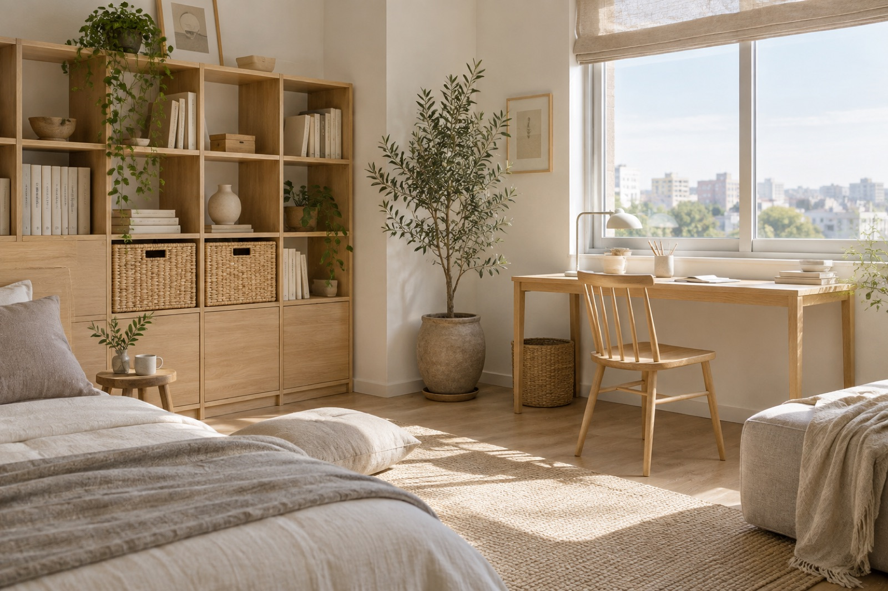

設計 Guideline
NestCraft 的色彩、字級、間距與元件規範。頁面上的數值對應 _variables.scss 與 _base.scss，改色或改間距時，兩邊要同步。
概覽
家具每天都會用到，網站也應該像好用的家具：安靜、耐看，需要的時候馬上找得到。
- 風格定位
- 日系無印風
- 色系搭配
- 淺色系 ＋ 暖大地（米白、淺原木、亞麻灰）
- UI 視覺特點
極簡清爽的商品結帳清單，大面積留白，減少填寫付款資訊時的焦慮感。
- 品牌
- 專為租屋族與小資家庭設計的模組化家居電商，主打「靈活收納、小坪數友善」。
以上文字引用自課程規格文件。

設計原則
- 留白即秩序
- 區塊之間留 64／96px，用距離分組，而不是加框線、色塊或陰影。
- 素材自然
- 顏色取自米白、原木與亞麻；照片使用自然光，不去背、不加漸層。
- 結帳不焦慮
- 表單單欄分組、由上而下填寫，只有相關的短欄位才兩兩並排；每個欄位都有標籤，錯誤訊息直接說明怎麼修正。
- 尺寸一目了然
- 列表、詳情、購物車都標出 W × D × H，用尺寸線
.dim呈現，不讓人猜放不放得下。
頁面與共用區塊
- 每一頁都是一份完整的 HTML，用
<a href="products.html">這類相對連結換頁；商品詳情只有一頁product.html。 - 頁首、頁尾在每一頁都完整寫一份。要改時先改
templates/page.html，再把同一段貼到每一頁，最後執行npm run check，確認每一頁的<head>、頁首、頁尾都與範本一致。 - 價格、尺寸、品名等假資料直接寫在 HTML。同一件商品會出現在商品卡、商品詳情、購物車與訂單，改資料時要一起改。
- 樣式寫在
scss/，改完執行npm run css編譯成css/style.css；互動只用 Bootstrap 的data-bs-*屬性與js/main.js（手機搜尋列聚焦、顯示密碼、分頁籤捲進畫面、我的訂單的狀態篩選）。
色彩
米白為底、原木點綴、墨色寫字。大面積使用最淺的三種底色，深色只留給文字與主要按鈕。
對比度依 WCAG 公式計算。文字需達 4.5:1（AA），邊框、焦點等非文字元素需達 3:1。色塊與下方的 hex 分別寫在 _guideline.scss 與本頁的 HTML，改 _variables.scss 的色票時要一起更新。
底色
三種底色明度接近，只用細微的差異分出頁面、區塊與卡片。
紙白
$paper
#F6F3EE
頁面底色（$body-bg）
生成
$kinari
#ECE6DC
區塊底 .section-alt、頁尾、停用的輸入框（$body-secondary-bg）
暖白
$white-warm
#FFFDF9
卡片、輸入框、下拉選單；深色按鈕上的文字
線條
所有分隔都是 1px。由淺到深：髮絲線用來分隔；亞麻灰用在裝飾線，以及本身有文字可辨識的外框；表單控制項要看得清邊界，才用鈍亞麻。
髮絲線
$hairline
#E3DDD3
預設邊框、分隔線、表格線
亞麻灰
$linen
#C9C2B6
裝飾線：尺寸線、步驟連接線、麵包屑分隔符號；選項卡與次要按鈕的外框（有文字辨識，不需 3:1）；停用狀態
鈍亞麻
$linen-dark
#8E8679
表單控制項邊框：輸入框、下拉選單、核取方塊、數量框
對紙白 3.3:1 非文字 3:1
原木
原木是點綴色，只出現在小面積的裝飾線。原木對紙白只有 2.4:1，文字與鍵盤焦點一律改用深原木。
淺原木
$oak-light
#E4D6C1
選取狀態的底色、標記
原木
$oak
#B89A72
裝飾線：導覽列目前頁的短線、引言線；.btn-oak 的底色
對紙白 2.4:1 不可作文字
深原木
$oak-deep
#7A6040
點綴文字、連結 hover、鍵盤焦點外框、輸入框 focus 邊框
對紙白 5.3:1 對生成 4.7:1 AA
墨
內文只用墨與深亞麻，不用純黑。點綴與提醒文字改用深原木、深芥子，狀態文字用各自的狀態色。
墨
$sumi
#3E3A35
主文字、主要按鈕（primary）
對紙白 10.2:1 對生成 9.1:1 AAA
深墨
$sumi-deep
#2F2C28
強調文字、主要按鈕 hover／active、淺色按鈕上的文字
對紙白 12.6:1 對生成 11.2:1 AAA
深亞麻
$linen-deep
#6A635A
次要文字、表單說明、輸入框 placeholder（secondary）
對紙白 5.4:1 對生成 4.8:1 AA
狀態
取自日本傳統色並降低彩度，出錯時也不會讓畫面變得緊張。芥子太淺，只作底色；提醒文字用深芥子。
苔色
$moss
#5C6B4C
成功、驗證通過、已完成
對紙白 5.2:1 對生成 4.6:1 AA
弁柄
$bengara
#A4493D
錯誤、刪除
對紙白 5.3:1 對生成 4.7:1 AA
芥子
$karashi
#C39A45
提醒，只作底色或圖示：.alert-warning、待付款標籤的淡底
對紙白 2.4:1 不可作文字
深芥子
$karashi-deep
#7A5A1C
提醒文字、待付款標籤
對紙白 5.7:1 對生成 5.1:1 AA
藍鼠
$ai-nezumi
#56697A
資訊、已付款
對紙白 5.1:1 對生成 4.6:1 AA
Bootstrap theme color 對應
在 $theme-colors 中改寫，所以 .btn-*、.text-*、.bg-*、.alert-* 都會自動換成這組顏色。按鈕與標籤上的字色由 Bootstrap 依底色自動挑選，改成色票內的暖白與深墨。
| Theme | 對應變數 | 用途 |
|---|---|---|
primary$sumi |
$sumi |
主要按鈕、核取方塊已選、分頁目前頁 |
secondary$linen-deep |
$linen-deep |
次要文字、低強調的外框按鈕 |
success$moss |
$moss |
驗證通過、付款完成 |
info$ai-nezumi |
$ai-nezumi |
配送與流程說明 |
warning$karashi |
$karashi |
提醒的底色；文字改用 $karashi-deep |
danger$bengara |
$bengara |
錯誤、刪除 |
light$kinari |
$kinari |
淺底區塊 .bg-light |
dark$sumi-deep |
$sumi-deep |
深色強調，少用 |
oak$oak |
$oak |
自訂：.btn-oak、.bg-oak；.text-oak 對比不足，不用於文字 |
語意變數
$body-bg$paper$body-color$sumi$body-secondary-color$linen-deep$body-secondary-bg$kinari$body-emphasis-color$sumi-deep$border-color$hairline$input-border-color$linen-dark$input-placeholder-color$linen-deep$input-focus-border-color$oak-deep$focus-ring-color$oak-deep$link-color$sumi$link-hover-color$oak-deep$code-color$oak-deep$color-contrast-light$white-warm$color-contrast-dark$sumi-deep
字級階層
用留白拉開層級，而不是粗體或顏色。標題字重 400、字距 .12em，全站粗體上限 500。
字體家族
NestCraft 0123456789
Light 300 Regular 400 Medium 500
Jost
英數：價格、尺寸、訂單編號與品牌字。
靈活收納，小坪數友善
細體 300 常規 400 中等 500
Noto Sans TC
中文：Jost 沒有的字元會自動落到這套字體。
$font-family-base："Jost", "Noto Sans TC", "PingFang TC", "Microsoft JhengHei", system-ui, sans-serif
字級表
表列為 1200px 以上的尺寸。20px 以上的字級（display、h1–h3）在 1200px 以下由 Bootstrap RFS 依視窗寬度自動縮小。small 繼承 body 算好的字距 0.64px，不會跟著字級變小。
.display-1
- 56px／3.5rem
- 字重 300
- 行高 1.4
- 字距 .12em
把有限的坪數
.display-2
- 48px／3rem
- 字重 300
- 行高 1.4
- 字距 .12em
把有限的坪數
.display-3
- 40px／2.5rem
- 字重 300
- 行高 1.4
- 字距 .12em
把有限的坪數
.display-4
- 36px／2.25rem
- 字重 300
- 行高 1.4
- 字距 .12em
把有限的坪數
.display-5
- 32px／2rem
- 字重 300
- 行高 1.4
- 字距 .12em
把有限的坪數
.display-6
- 28px／1.75rem
- 字重 300
- 行高 1.4
- 字距 .12em
把有限的坪數
h1
- 32px／2rem
- 字重 400
- 行高 1.5
- 字距 .12em
頁面標題，每頁一個。商品詳情的 h1 是完整品名，改用 .h2 尺寸並加 .text-phrase（見下方「標題與品名的換行」）
把有限的坪數，活出無限的講究。
h2
- 26px／1.625rem
- 字重 400
- 行高 1.5
- 字距 .12em
區塊標題
專為小日子設計的四大堅持
h3
- 22px／1.375rem
- 字重 400
- 行高 1.5
- 字距 .12em
子區塊標題
靈感提案｜看見你未來的家
h4
- 18px／1.125rem
- 字重 400
- 行高 1.5
- 字距 .12em
摘要、卡片群組標題
人氣嚴選｜空間放大的秘密武器
h5
- 16px／1rem
- 字重 400
- 行高 1.5
- 字距 .12em
清單項目標題
橡木餐桌
h6
- 14px／.875rem
- 字重 400
- 行高 1.5
- 字距 .12em
表單群組、頁尾欄位標題
收件資訊
.page-lead
- 16px／1rem
- 字重 400
- 行高 1.85
- 字距 .04em
頁首說明：深亞麻、最寬 36em。.section-heading 的說明同樣式
從沙發、餐桌到收納，找到放得下、也帶得走的家具。
內文
- 16px／1rem
- 字重 400
- 行高 1.85
- 字距 .04em（0.64px）
商品介紹、段落
嚴選北美 FAS 級白橡木打造，保留天然溫潤的木紋肌理與原木觸感。寬敞的桌面設計搭配倒角安全收邊，穩固的實木桌腳提供優異的承重力，為您的餐廳空間注入自然質樸的北歐氣息，是與家人朋友共享美好時光的完美選擇。
small
- 13px／.8125rem
- 字重 400
- 行高 1.85
- 字距 0.64px
註記、表單說明、麵包屑
滿 NT$ 3,000 免運，大型家具出貨前會先來電約定時間。
數字
價格、尺寸、訂單編號加上 .num 或 .price，使用 Jost 的等寬數字，上下對齊更整齊。
.price價格- NT$ 16,800
.dim尺寸- W160 × D80 × H75 cm
.num訂單編號- NC-20260923-001
- 金額靠右對齊
-
- 橡木餐桌
- NT$ 16,800
- NestBox 自由拼裝
收納方塊 (三入組) × 2 - NT$ 2,560
- SlimFit 夾縫
多功能推車 - NT$ 890
- 小計
- NT$ 20,250
標題與品名的換行
標題已設定 text-wrap: balance，多行時平均分配；p、li、dd、label 與 .form-text 用 text-wrap: pretty，避免最後一行只剩一個字。品名另外要求：不從詞中間拆開。
NestBox 自由拼裝
日暮亞麻｜
.text-phrase：只在空白與斷點換行NestBox 自由拼裝
日暮亞麻｜
虛線是欄寬邊界。示範欄寬 10rem，約等於手機 2 欄商品卡的標題寬度。
- 商品詳情的 h1 是完整品名，寫成
<h1 class="h2 text-phrase">：保留 h1 的文件結構，字級用 h2 的 26px（1200px 以下由 RFS 縮小，390px 約 22px），長品名不會佔掉半個首屏。 - 斷點寫在 HTML：長品名與情境標題在詞組之間插入
<wbr>，例如「自由拼裝<wbr>收納方塊」「懸浮感<wbr>洞洞板<wbr>壁面收納組」。畫面上看不到，文案仍然逐字；不要改成一般空白。 - 加上
.text-phrase（word-break: keep-all＋overflow-wrap: anywhere）後，只在空白與這些斷點換行，「收納方塊」「(三入組)」這類詞組不會被拆開；單一詞組比欄寬還長時，才會強制斷行。 - 商品卡標題
.product-card-title與訂單摘要的品名已內建同樣的規則，不用再加類別。商品詳情 h1、情境圖小卡、區塊標題等其他地方的品名與短標題，要自己加.text-phrase。 - 不要用在長段落：中文只剩空白與標點可以換行，商品介紹這類段落的行尾會參差不齊，窄欄時還會留下大段空白。
直書主標
全站唯一的招牌元素，只用在首頁主標。直書本身是 .text-vertical（_base.scss），字級、錯位與對齊寫在 _home.scss 的首屏主標；下方示範與首頁同一組數值，縮放視窗就能看到各斷點的字級。

手機版首屏的排法：主標在左、圖片在右。
writing-mode: vertical-rl，由右至左換行；字距 .24em、行高 2，比橫書更疏。- 標籤用 h1，字重 400；字級 28／32／36／42px（xs／sm／md／xxl），直接寫 rem，不經 RFS 縮放。
- 兩行各包一個
span.d-block並設nowrap，斷句由文案決定，不讓瀏覽器自動換行。 - 第二行加
padding-inline-start: 1em，往下錯開一個字，形成階梯。 - 整組
margin-left: -.5em靠左：直書每行的寬度是字級的 2 倍、字形置中，左緣會多出半個字寬，拉回後字與版心對齊。 - 手機：主標在左、圖片在右並貼齊螢幕右緣，說明與按鈕接在下方。992px 以上：主標與說明放左欄，圖片佔右欄並延伸到視窗右緣。
- 數字、英文與段落文字不直書。
間距
以 1rem = 16px 為基準，並把 Bootstrap 的 spacer 擴充到 8 階。p、m、gap 工具類別都能使用 0–8。
區塊節奏
.section上下留白- 64px（spacer 6），992px 以上 96px（spacer 7）
.section-heading- 標題與說明相距 8px（spacer 2），與內容相距 48px（spacer 5）
- 卡片內距
- 24px（
$card-spacer-x／y: 1.5rem） - 格線 gutter
- 32px（
$grid-gutter-width: 2rem）；密集列表可用.gx-3、.gx-4收緊 - 容器左右內距
- 各 20px（
$container-padding-x: 2.5rem，左右各取一半）；需大於等於 gutter，.row才不會溢出 - 容器最大寬
- 1240px（1400px 以上）
- 頁首高度
- 82px（
$site-header-height: 5.125rem）：$navbar-padding-y上下各 16px、44px 圖示按鈕與底線，不含上方公告列 - sticky 位移
- 106px（
$sticky-top-offset，頁首再加 24px）。側欄、目錄等 sticky 元素的 top，以及 html 的scroll-padding-top都用這個值，點同頁錨點時，目標會停在頁首下方。 - 頁尾上方
- 64px（spacer 6），992px 以上 96px（spacer 7），與區塊留白一致
頁首節奏
首頁以外的每一頁，頁首都用 .page-header 包住麵包屑（或結帳步驟）、h1 與一句說明，切換頁面時標題會停在同一個位置。各頁不要另外設定頁首間距。
- 頁首 → 麵包屑
- 24px，992px 以上 48px
- 麵包屑或步驟 → h1
- 24px，992px 以上 48px
- h1 → 說明
- 8px；說明用
.page-lead，深亞麻、最寬 36em - 說明 → 內容
- 48px，各斷點相同
- 麵包屑
aria-label="目前位置"；第一項是「首頁」，最後一項是目前頁，加.active與aria-current="page"，不做成連結。商品詳情的最後一項用簡短品名。每一項都不斷行（.breadcrumb-item已內建nowrap），放不下時整項移到下一行。連結已內建 44px 觸控高度。- 結帳流程
- 購物車、結帳、付款結果三頁以結帳步驟
.checkout-steps取代麵包屑，放在 h1 之前。
圓角與陰影
近乎直角，幾乎不用陰影。形狀越安靜，木紋與布料的質感越明顯。
圓角
.rounded-1 1px
$border-radius-sm
小尺寸輸入框 .form-control-sm
.rounded 2px
$border-radius
預設：按鈕、輸入框、卡片、提示、標籤
.rounded-3 4px
$border-radius-lg
Modal、大尺寸輸入框
.rounded-pill 50rem
$border-radius-pill
購物車數量徽章
$border-radius-xl（6px）與 $border-radius-xxl（8px）保留在變數中，本風格不使用。圓形 50% 只用於步驟與狀態的圓點。
陰影
$enable-shadows: false，Bootstrap 元件不會自動產生陰影。下拉選單與 Modal 已在 _base.scss 預設加上 $box-shadow、$box-shadow-lg；其他需要浮起的元素，才手動加上陰影工具類別。
$enable-shadows: false
none
卡片、區塊一律不加陰影，用髮絲線或底色分層
$box-shadow-sm
0 1px 2px rgba($sumi, .06)
保留給貼近底面的小元件，目前頁面沒有使用。情境圖的標記點是半透明暖白光暈（_home.scss），不是陰影
$box-shadow
0 8px 24px rgba($sumi, .08)
下拉選單（已預設）。情境圖熱點浮出的商品小卡就是下拉選單，不另外加
$box-shadow-lg
0 16px 48px rgba($sumi, .10)
Modal（已預設）等最上層的浮層
邊框
髮絲線 $hairline
預設。卡片、表格、分隔線 .rule、分頁籤底線。
亞麻灰 $linen
裝飾線：尺寸線、步驟之間的連接線、麵包屑分隔符號。也用在本身有文字的外框：結帳選項卡、社群登入等次要按鈕，外框不需 3:1。
鈍亞麻 $linen-dark
表單控制項：輸入框、下拉選單、核取方塊、數量框、未完成步驟的圓點。對紙白 3.3:1。
虛線 dashed
表示「不再有效或不可選」：已取消的訂單標籤、停用的配送選項卡。另用在「設計稿狀態示意」.demo-state 的分隔線與 .demo-state-stage 的示範框，標出不是正式畫面。
元件狀態規範
滑過與鍵盤焦點用 .gl-is-hover、.gl-is-focus 強制呈現，讀取的是 Bootstrap 按鈕的 hover 與 focus 變數（--bs-btn-hover-*、--bs-btn-focus-box-shadow），與真實互動一致。
按鈕
.btn-primary
主要動作，用來推進流程。同一組動作（一個表單、一個面板、一張卡片）只放一個。
預設 default
滑過 hover
按下 active
鍵盤焦點 focus
停用 disabled
.btn-outline-primary
次要動作：與主要按鈕並列，或表單內的單一送出，例如購物車折扣碼的「套用」。
預設 default
滑過 hover
按下 active
鍵盤焦點 focus
停用 disabled
.btn-oak
保留的點綴樣式，目前頁面沒有使用。需要時一頁至多一處，不與主要按鈕並列。
預設 default
滑過 hover
按下 active
鍵盤焦點 focus
停用 disabled
.btn-outline-secondary
低強調的工具動作：篩選、查看明細、頁面導覽。
預設 default
滑過 hover
按下 active
鍵盤焦點 focus
停用 disabled
.btn-text
文字連結型：繼續購物、返回購物車、移除。已內建 44px 觸控高度。
預設 default
滑過 hover
按下 active
鍵盤焦點 focus
停用 disabled
尺寸
.btn-sm 高 44px
預設 高 54px
.btn-lg 高 64px
圖示在文字左側，間距 4–8px
.btn-text 高 44px（內建）
- 三種尺寸都達到 44px 觸控目標。
.btn-sm用在卡片、列表等密集區域，與相鄰按鈕保持 8px 以上間距。 .btn-text已內建inline-flex與min-height: 44px，文字垂直置中，看起來仍是一行文字連結。使用時直接寫class="btn btn-text"，不要再加py-*、min-height或自訂 padding。
鍵盤焦點
- 只在鍵盤操作時出現（
:focus-visible），滑鼠點擊不留外框。一律是實色深原木$oak-deep（對紙白 5.3:1），不用半透明光暈。 - 全站預設：2px 深原木外框，與元素相距 2px。Bootstrap 的
$focus-ring-color也設為$oak-deep，頁首導覽連結、搜尋框、漢堡選單按鈕都是同一個顏色。 - 按鈕：先留 2px 紙白間隙，再畫 2px 深原木外圈，五種按鈕一致，見上方「鍵盤焦點 focus」一欄。
- 輸入框、下拉選單：1px 邊框換成深原木，外加 1px 深原木（
$input-focus-box-shadow），合成 2px 實線框，見下方「表單」的「焦點 focus」。 - 核取方塊、單選：和按鈕相同的雙環，2px 紙白間隙加 2px 深原木外圈（
$form-check-input-focus-box-shadow）。 - 分頁籤與數量框的輸入欄：焦點畫在內側，不會被橫向捲動的容器裁掉。
- 不被頁首擋住：html 設
scroll-padding-top: $sticky-top-offset，Tab 到被捲到頂端的元素時，會停在 sticky 頁首下方。 - 同頁錨點（本頁目錄、商品詳情的「閱讀完整介紹與規格」、頁首的「跳至主要內容」）：瀏覽器捲到目標後，下一次 Tab 從目標區塊繼續。目標加了
tabindex="-1"時（例如<main>）會取得焦點，這種焦點不畫外框。 - 原木
$oak對紙白只有 2.4:1，不到非文字的 3:1，不用來畫焦點。
觸控目標
- 可以點的東西至少 44 × 44px，看起來小的元件用
min-height、min-width或內距補足，不放大字級。 - 已內建：三種按鈕尺寸、
.btn-text、數量框的加減鍵、麵包屑連結、.nav-underline分頁（最小寬 44px）、結帳步驟.checkout-steps每一步（手機只剩圓點時也是 44 × 44px）、頁首圖示按鈕、頁尾連結。 - 頁尾還沒設計的頁面寫成不帶
href的<a>：不能點、不能 Tab 到，也不會像href="#"那樣跳回頁面頂端。
表單
每個欄位都有看得見的標籤。說明與錯誤訊息用 aria-describedby 連到欄位。邊框用鈍亞麻 $input-border-color；placeholder 用深亞麻 $input-placeholder-color（對暖白 5.8:1），只寫範例格式，不取代標籤。
- 選填：標籤文字後面加
span.form-label-optional，內容只寫「選填」，不加括號。與標籤相距 8px，13px 深亞麻。全站的選填欄位（購物車的折扣碼、結帳的備註）都用這個類別，不要各頁自己寫樣式。 - 必填不另外加星號；表單開頭用一句話說明，例如結帳頁的「除了標示『選填』的欄位，其他都需要填寫」。
預設 default
焦點 focus
出貨前會用這支電話和你約配送時間。
通過 is-valid
格式正確，訂單確認信會寄到這裡。
錯誤 is-invalid
手機號碼需要 10 碼數字，例如 0912 345 678。
停用 disabled
目前只配送台灣本島。
下拉選單 select
多行文字 textarea ＋ 選填標示 ＋ 說明 form-text
需要搬運大型家具時，可以在這裡註明樓層與有無電梯。
品名與尺寸
品名與尺寸在每一頁都用同一種寫法，不各自改寫；品名逐字沿用課程文件。
品名
- 完整品名：商品卡、商品詳情 h1、購物車品項、訂單摘要、情境圖熱點小卡、我的訂單。
- 簡短品名：只用在商品詳情的麵包屑；沒有簡短品名的商品用完整品名。訂單摘要這類窄欄也用完整品名，靠換行規則處理。
- 長品名在 HTML 裡用
<wbr>標出斷點，搭配.text-phrase只在空白與斷點換行，見「字級階層」的「標題與品名的換行」。
| 完整品名 | 簡短品名 |
|---|---|
| NestBox 自由拼裝 |
NestBox 自由拼裝 |
| 日暮亞麻｜ |
日暮亞麻｜ |
| 懸浮感 |
懸浮感 |
尺寸
- W160 × D80 × H75 cm
- 單入 W35 × D35 × H35 cm
- 單片底板 W60 × D2 × H60 cm
- 沙發模式 W150 × D85 × H80 cm
- 床鋪模式 W150 × D190 × H40 cm
- 全站同一種格式：商品卡、商品詳情的尺寸圖、購物車品項、情境圖熱點小卡都照上方的範例寫，不自行簡寫。
- 乘號用「×」並前後各空一格，單位 cm 放在最後。這些空格要寫成不換行空白
，只有限定詞後面可以換行（「沙發模式」／「W150 × D85 × H80 cm」），行尾不會吊著一個「×」。 - 價格與尺寸對應的數量不同時，把限定詞放在最前面，例如「單入」「單片底板」。
- 有兩種使用狀態的商品逐行列出，每行以模式名稱開頭；商品卡只顯示第一種。
- 唯一例外：商品詳情「規格」分頁的「尺寸」列，直接照抄課程文件（Notion）的原文，限定詞的位置與括號都照原文。
- 全站格式
- 單片底板 W60 × D2 × H60 cm
- 規格表原文
- W60 × D2 × H60 cm (單片底板)
同一件商品：懸浮感
數量、訂單狀態與庫存
數量增減
.qty：外框與輸入框相同的鈍亞麻，加減鍵各 44 × 44px。
一般
已售完：整組停用，外框改為髮絲線
訂單狀態
.badge-status：文字與圓點用狀態色，底色只留淡淡一層；待付款的文字用深芥子 $karashi-deep。
- 待付款訂單已成立，尚未收到款項；同時寫出付款期限
- 已付款已收到款項，正在備貨
- 出貨中已交給物流，大型家具會先來電
- 已完成已送達並簽收
- 已取消訂單已取消，不會扣款；同時寫出取消日期
配送進度沿用同一組用語：已付款 → 備貨中 → 出貨中 → 已完成。「備貨中」只是進度節點，不是訂單狀態，也不出現在篩選分頁籤。
庫存標示
門檻是 10 件：商品詳情與本頁用同一個數字，改門檻時兩頁一起改。
- 現貨，48 小時內出貨 庫存 10 件以上
- 剩 4 件 1–9 件：顯示實際數量
- 已售完 0 件：商品圖標示「已售完」，數量框停用
售完時的按鈕
商品卡：唯一的按鈕停用並改寫「已售完」。商品詳情：「加入購物車」停用並改寫「已售完」，主要按鈕換成「貨到通知我」，展開 Email 欄位登記補貨通知，讓使用者還有下一步。
商品詳情：售完時的兩顆按鈕
導覽
.nav-underline 商品詳情分頁、訂單篩選
- 會切換下方內容的分頁（商品詳情）用
role="tablist"、role="tab"加aria-selected，並以aria-controls連到面板；只切換篩選條件的（訂單狀態、商品分類）用 button 加aria-pressed，如上方示範。選中的按鈕不用aria-current。 - 高度 44px 以上；只有兩個字的分頁（「規格」「評價」）也保有 44px 最小寬度。放不下時橫向捲動，手機加
.bleed-x貼齊螢幕兩側。 - 數量接在文字後面，用
span.tab-count（例如評價則數、各分類的商品數），不加括號。
.breadcrumb 分隔符號「/」，目前頁不是連結；單項不斷行
.pagination 目前頁為墨色實心
提示訊息
先說結果，再說下一步。不用驚嘆號，不責怪使用者，也不用錯誤代碼。
付款完成
訂單 NC-20260923-001 已成立，確認信已寄到你的信箱。
大型家具採預約配送
出貨前客服會先來電，和你確認送達時間與搬運動線。
有一件商品已售完
「藤編收納櫃」已從這次結帳移除，其他商品不受影響。
付款沒有完成
這筆交易沒有扣款。請確認卡號與有效期限，再試一次。
空狀態
列表沒有內容時，用一句話說明現況，再給一個能繼續下去的動作。不道歉、不放插圖或表情符號，也不留下空白的表格標題列。樣式用共用的 .empty-state，各頁不要另外寫。
整頁沒有內容：購物車是空的
購物車裡還沒有商品。
瀏覽商品一覽篩選後沒有結果：我的訂單
目前沒有待付款的訂單。
- 說明只寫事實，例如「購物車裡還沒有商品」「目前沒有待付款的訂單」，不寫「哎呀」「很抱歉」。
- 只放一個動作。整頁沒有內容時用主要按鈕帶去逛商品；篩選後沒有結果時用低強調按鈕，回到全部列表。
- 靠左對齊，起點與原本的列表相同；上方留 48px，不加框、不加底色。
- 設計稿用靜態畫面呈現這些狀態：放在頁面底部的「設計稿狀態示意」
.demo-state，以虛線和正式內容分開，標題寫明是哪一種情況（例如「購物車是空的時」「篩選後沒有訂單時」）。
共用元件
商品卡 .product-card
卡片依自身寬度調整版面（container query）：寬度 15rem 以下時，價格與按鈕上下排列、按鈕滿版，並隱藏尺寸線。手機的商品列表是 2 欄，看到的就是窄卡。
一般

已售完：庫存 0 件

閃電結帳：首頁人氣嚴選
窄卡：寬度 15rem 以下
- 一般：
btn-outline-primary「加入購物車」。已售完：按鈕停用並改寫「已售完」，圖片左上角標示「已售完」。 - 閃電結帳：只用在首頁「人氣嚴選」，按鈕改為實心的「閃電結帳」（Notion 文案），直接連到
checkout.html。每張卡只有這一個動作，所以一列四張卡各有一顆實心按鈕；除此之外，同一組動作只放一個主要按鈕。 - 完整品名已內建詞組換行。圖片和品名連到同一頁，圖片連結不進 Tab 順序、也不讓螢幕閱讀器再念一次。
- markup 直接複製上方示範，商品列表與首頁的人氣嚴選用的是同一段。圖片與品名都連到
product.html（設計稿只有一頁商品詳情），長品名用<wbr>標出斷點。
結帳步驟 .checkout-steps
放在 .page-header 內、h1 之前，取代麵包屑的位置。靠左橫排，圓點與文字同一行，步驟之間以髮絲線相連。
第 1 步：購物車
第 2 步：填寫資料與付款
第 3 步：完成訂單
- 目前步驟：li 加上
.is-current與aria-current="step"，圓點為墨色實心。 - 已完成：li 加上
.is-done，圓點為墨色外框加打勾，文字後面的.visually-hidden讓螢幕閱讀器念出「（已完成）」。在第 2 步時，「購物車」寫成連到cart.html的<a>，可以點回去修改；付款完成後不再提供返回，改用<span>。 - 未完成：鈍亞麻外框圓點，連接線用亞麻灰。
- 手機（576px 以下）只顯示目前步驟的文字，其餘步驟留下圓點；每一步的點擊範圍仍有 44 × 44px。
訂單摘要 .order-summary
購物車、結帳、付款結果三頁共用同一套 markup，樣式寫在 _order-summary.scss，換頁時面板的內距、行距、字級都不變。下方示範用的是購物車的品項，寬度約等於 1440px 時的右欄。
結帳：品項 ＋ 金額列
購物車：只有金額列，運費下方加補充說明
- 購物車
- 金額列（商品小計、運費與免運門檻、應付總額）→「前往結帳」→「繼續購物」。加
.is-sticky。 - 結帳
- 品項 → 金額列 →「確認付款」→「返回購物車」。加
.is-sticky；992px 以下同一組 markup 收合在表單上方，按「查看訂單明細」展開。 - 付款結果
- 訂單資訊列（編號、付款、配送、預計到貨）→ 品項 → 付款金額。是頁面的主要內容，外層用
section，不 sticky。
- 面板：暖白底、髮絲線外框、圓角 2px，不加陰影；內距 24px，1200px 以上 32px。
- 標題
.order-summary-title：頁面上是 h2（本頁示範降為 h4），字級用 h4 的 18px，與內容相距 24px。 - 品項：縮圖 64px 正方形；完整品名 14px，已內建詞組換行（只在空白與
<wbr>斷點換行）；數量在左、小計在右，不另佔一欄。 - 金額列
.order-summary-row：標籤靠左用深亞麻，數值靠右，列距 8px。補充說明.order-summary-note獨立一行靠左。 - 總額
.order-summary-total：上方一道髮絲線，標籤改用墨色，金額 22px。品項與金額列之間同樣以髮絲線分開，上下各 16px。 .is-sticky：992px 以上固定在右欄，top 106px。螢幕較矮時品項清單先縮短、在清單內捲動（至少 120px），金額與按鈕維持看得到。- 按鈕放在面板最後：主要按鈕滿版、上距 24px，下方一個
.btn-text。
RWD 斷點
沿用 Bootstrap 預設斷點，只把最大容器改成 1240px。每頁都以 390、768、992、1200、1440px 五種寬度檢查，992 與 1200 是版面切換的邊界，最容易出問題。
- 斷點 xs 類別中綴 無 視窗寬度 < 576px 容器最大寬 100% 單欄為主；商品列表 2 欄；導覽收合為選單按鈕，會員入口移到選單內；橫向捲動列貼齊螢幕兩側。
- 斷點 sm 類別中綴 -sm 視窗寬度 ≥ 576px 容器最大寬 540px 版型同 xs，容器改為置中；頁首右側出現會員圖示。
- 斷點 md 類別中綴 -md 視窗寬度 ≥ 768px 容器最大寬 720px 商品列表 3 欄；購物車出現欄位標題列；公告列顯示完整訊息；頁尾改為 3 欄。
- 斷點 lg 類別中綴 -lg 視窗寬度 ≥ 992px 容器最大寬 960px 導覽列展開並顯示搜尋框；篩選改為側欄；購物車與結帳摘要移到右側；我的訂單的會員選單移到左側；頁首上方 24 → 48px，區塊與頁尾上方 64 → 96px。
- 斷點 xl 類別中綴 -xl 視窗寬度 ≥ 1200px 容器最大寬 1140px 頁首顯示品牌副標；RFS 停止縮放，標題回到固定字級。
- 斷點 xxl 類別中綴 -xxl 視窗寬度 ≥ 1400px 容器最大寬 1240px 容器最大寬，更寬的螢幕只增加兩側留白；首頁直書主標放大到 42px。
各頁的版型行為
- 頁首導覽
- 手機 選單收合；右側為搜尋與購物車圖示（576px 以上加上會員），搜尋按放大鏡展開
- 平板 同手機
- 桌機 水平展開，顯示搜尋框
- 商品列表
- 手機 2 欄；分類是橫向捲動的分頁籤，其餘篩選收進 offcanvas，按「篩選」開啟
- 平板 3 欄；篩選仍為 offcanvas
- 桌機 左側篩選欄 ＋ 右側 3 欄
- 購物車
- 手機 應付總額與「前往結帳」先列在清單上方；品項為暖白卡片；訂單摘要接在清單與折扣碼之後
- 平板 品項改為髮絲線分隔的清單列，出現「商品／數量／小計」欄位標題列；摘要靠右 8 欄
- 桌機 清單 8 欄 ＋ 摘要 4 欄，摘要 sticky；清單上方的總額列隱藏
- 結帳
- 手機 訂單摘要收合在表單上方，按「查看訂單明細」展開；表單最後是應付總額與「確認付款」
- 平板 同手機；姓名與手機號碼並排，付款方式 2 欄
- 桌機 表單 7 欄 ＋ 摘要 5 欄，摘要 sticky，「確認付款」移到摘要內；1200px 以上 8 ＋ 4，與購物車相同
- 我的訂單
- 手機 篩選分頁籤橫向捲動、貼齊螢幕兩側；訂單一列一筆，以髮絲線分隔；會員選單接在訂單清單之後
- 平板 同手機；每筆訂單的品項與金額改為左右排
- 桌機 會員選單 3 欄 sticky ＋ 訂單 9 欄
- 出貨中的訂單會顯示配送進度，節點用語與訂單狀態一致：已付款 → 備貨中 → 出貨中 → 已完成。
- Guideline
- 手機 目錄改為頁首下方的橫向捲動列，捲動時固定在頂端
- 平板 同手機
- 桌機 左側固定目錄 ＋ 右側內容
手機的橫向捲動列
商品分類標籤、訂單篩選、首頁的空間情境卡與人氣嚴選，以及本頁的手機目錄，在 576px 以下都用 .bleed-x（或 @include bleed-x）：捲動列貼齊螢幕兩側，第一項仍對齊版心。不要各頁自己計算負 margin。
分類標籤：在手機上往右滑
- 作法：
margin-inline: -20px加上padding-inline: 20px，數值取自$container-padding-x的一半。 - 捲軸隱藏，所以右緣要讓最後一個看得見的項目被切到一半，或加上淡出，提示還能往右滑。
- 分頁籤之間，手機 1.5rem、768px 以上 2rem，已內建在
.nav-underline。
格線示意
12 欄格線。以下使用真實的格線類別，調整視窗寬度就能看到欄數變化。
.row-cols-2 .row-cols-md-3 商品列表
.col-lg-7 .col-xl-8 ＋ .col-lg-5 .col-xl-4 結帳
Do／Don’t 對照
標示「建議」的是推薦做法，標示「避免」的是應避免的做法；桌機左右並排，手機上下排列。範例都是真實的元件與類別。
用留白分組，不堆疊陰影卡片
色塊與陰影越多，視線越找不到重點；留白讓內容自己排出層級。
-
免工具組裝
90% 商品採卡扣與簡易設計，單人也能輕鬆完成。
-
租屋友善退換
14 天猶豫期，專人到府收件，試擺不將就。
-
現貨極速派送
48 小時內出貨，週末馬上動手改造。
免工具組裝
租屋友善退換
現貨極速派送
同一組動作只有一個主要按鈕
每個按鈕都一樣醒目時，使用者得停下來判斷下一步該按哪一個。次要的動作改用外框或文字按鈕。
原木色只做點綴，不寫小字
$oak 對紙白只有 2.4:1，未達 AA 的 4.5:1；需要原木色的文字請改用 $oak-deep（5.3:1）。
滿 NT$ 3,000 免運
文字 $oak-deep，原木色只留給上方的短線
滿 NT$ 3,000 免運
文字 .text-oak，對比 2.4:1
價格清楚就好，不用紅色粗體促銷
強烈的促銷色會讓結帳前的決定變得急躁；金額好讀，才讓人放心。
橡木餐桌
NT$ 16,800
含稅，滿 NT$ 3,000 免運
限時搶購 原價 NT$25000
NT$16800!!
自然光、低彩度的照片，不去背加漸層
照片和網站同樣是暖白的底，畫面才安靜；高飽和與漸層會蓋過家具本身的材質。

結帳表單單欄分組，由上而下填寫
只有相關的短欄位（姓名／手機、有效期限／安全碼）才兩兩並排。視線不必左右跳動；每一欄都有標籤，就不會填到一半忘了這格要填什麼。
尺寸寫出數字，不用形容詞帶過
租屋族最在意放不放得下，W × D × H 應該在列表上就看得到，而不是點進詳情才找得到。

SlimFit 夾縫
W15 × D45 × H80 cm
NT$ 890
SlimFit 夾縫
超薄設計，什麼縫隙都放得進去
NT$ 890
錯誤訊息說明下一步，不用警告語氣
付款失敗時，使用者最擔心的是有沒有被扣款。先回答這件事，再說怎麼處理。
付款沒有完成
這筆交易沒有扣款。請確認卡號與有效期限，再試一次。